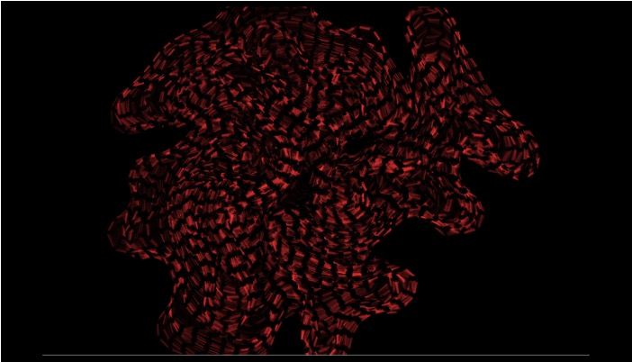

Morphogenesis
Morphogenesis, is a generative artwork that is based on a recursion diffusion algorithm, in which takes place the com‐ puter simulation of natural processes in the creation of form. The particular algorithm was initially introduced by Alan Tur‐ ing, in his paper The Chemical Basis of Morphogenesis , who predicted the system responsible for the creation of patterns on the outer surface of animal bodies. In this project, I have been investigating Alan Turing’s system of morphogenesis, in order to explore a possible merge of nat‐ ural processes of growth and the intrinsic patterns of growth that are applicable on societal structures of organization. The product of this practice is an open source code that is available on:
See the Pen differential line by Hrysovalanti (@Hrysovalanti) on CodePen.
This project was created as part of the graduate class with title Foundations of Digital Media, during the Fall semester of 2018, which was taught by professor Dr. Graham Wakefield.